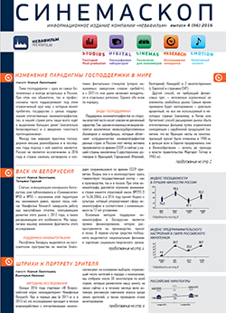
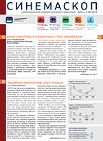
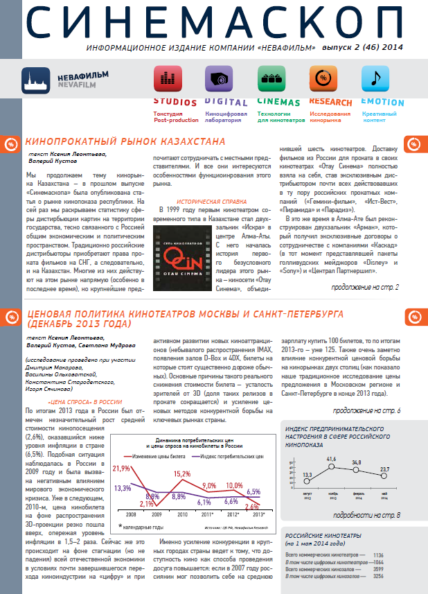
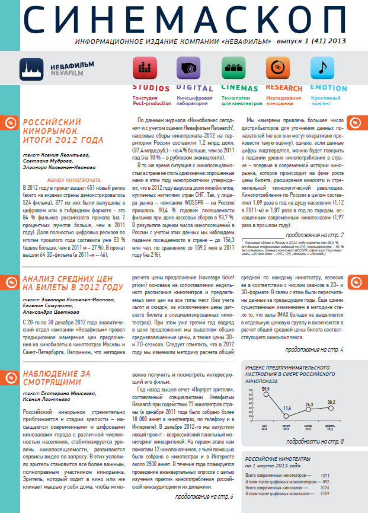

ПУБЛИКАЦИИ
СИНЕМАСКОП
Печатную версию издания СИНЕМАСКОП можно получить в рамках традиционных российских кинорынков и Киноэкспо.
«Синемаскоп» зарегистрирован Министерством РФ по делам печати, телерадиовещания и средств массовых коммуникаций. Свидетельство о регистрации ПИ № 2-6782 от 05.09.2003г.
2016
СИНЕМАСКОП №56 10-12/2016
Изменение парадигмы господдержки в мире
• Back in Белоруссия
• Штрихи к портрету зрителя
• Настроения российского кинопоказа: осень-2016-го
• Новости компании "Невафильм"
СИНЕМАСКОП №55 7-9/2016
СНГ – главный зарубежный рынок для российских фильмов
• Российский кинорынок: 2016 – итоги полугодия
• Работа над ошибками
• Настроения российского кинопоказа: лето 2016-го
• Новости компании "Невафильм"
СИНЕМАСКОП №54 4-6/2016
Ценовая политика кинотеатров Москвы и Санкт-Петербурга (декабрь 2015 года)
• Трансформация российской афиши 2013-2015 (исследование проведено при участии Александра Дьякова, Cinemaplex.ru)
• Путевка в мир – прокат европейских фильмов за рубежом (по материалам конференции Европейской аудиовизуальной обсерватории)
• Индекс предпринимательского настроения в сфере кинопоказа (весна 2016 года) - результаты ежеквартального опроса российских кинопоказчиков
• Новости компании "Невафильм"
СИНЕМАСКОП №53 1-3/2016
Российский кинорынок. Итоги 2015 года
• Кинофикация малых и средних городов: от стихии рынка к системным решениям
• Индекс предпринимательского настроения в сфере кинопоказа (зима 2015-2016 годов) - результаты ежеквартального опроса российских кинопоказчиков
• Новости компании "Невафильм"
2015
СИНЕМАСКОП №52 10-11/2015
Рынок кинопроката и кинопоказа стран Средней Азии - новые объекты для исследования: Киргизия, Таджикистан, Узбекистан, Туркмения
• Поддержка кинотеатров: опыт Франции - рассматриваем различные виды поддержки на ведущем европейском рынке
• Индекс предпринимательского настроения в сфере кинопоказа (осень - 2015) - результаты ежеквартального опроса российских кинопоказчиков
• Новости компании "Невафильм"
СИНЕМАСКОП №51 7-9/2015
О важнейшем из искусств. Личное мнение Олега Березина
• Российский кинорынок: итоги полугодия-2015
• Индекс посещаемости в лучших киносетях России
• Индекс предпринимательского настроения в сфере кинопоказа (лето - 2015)
• Новости компании "Невафильм"
СИНЕМАСКОП №50 4-6/2015
Ценовая политика кинотеатров
• Кинорынки СНГ - Казахстан и Белоруссия
• Индекс посещаемости в лучших киносетях Росси
• Новости компании "Невафильм"
СИНЕМАСКОП №49 1-3/2015
Российский кинорынок. Итоги 2014 года
• Кризис жанра
• Индекс предпринимательского настроения в сфере кинопоказа (зима-2014-2015) - результаты ежеквартального опроса российских кинопоказчиков
• Новости компании "Невафильм"
2014
СИНЕМАСКОП №48 10-12/2014
Рынок кинопроката и кинопоказа стран Средней Азии - новые объекты для исследования: Киргизия, Таджикистан, Узбекистан, Туркмения
• Поддержка кинотеатров: опыт Франции - рассматриваем различные виды поддержки на ведущем европейском рынке
• Индекс предпринимательского настроения в сфере кинопоказа (осень - 2015) - результаты ежеквартального опроса российских кинопоказчиков
• Новости компании "Невафильм"
СИНЕМАСКОП №47 7-9/2014
О важнейшем из искусств. Личное мнение Олега Березина
• Российский кинорынок: итоги полугодия-2015
• Индекс посещаемости в лучших киносетях России
• Индекс предпринимательского настроения в сфере кинопоказа (лето - 2015)
• Новости компании "Невафильм"
СИНЕМАСКОП №46 4-6/2014
Ценовая политика кинотеатров
• Кинорынки СНГ - Казахстан и Белоруссия
• Индекс посещаемости в лучших киносетях Росси
• Новости компании "Невафильм"
СИНЕМАСКОП №45 1-3/2014
Российский кинорынок. Итоги 2014 года
• Кризис жанра
• Индекс предпринимательского настроения в сфере кинопоказа (зима-2014-2015) - результаты ежеквартального опроса российских кинопоказчиков
• Новости компании "Невафильм"
2013
СИНЕМАСКОП №44 10-12/2013
Рынок кинопроката и кинопоказа стран Средней Азии - новые объекты для исследования: Киргизия, Таджикистан, Узбекистан, Туркмения
• Поддержка кинотеатров: опыт Франции - рассматриваем различные виды поддержки на ведущем европейском рынке
• Индекс предпринимательского настроения в сфере кинопоказа (осень - 2015) - результаты ежеквартального опроса российских кинопоказчиков
• Новости компании "Невафильм"
СИНЕМАСКОП №43 7-9/2013
О важнейшем из искусств. Личное мнение Олега Березина
• Российский кинорынок: итоги полугодия-2015
• Индекс посещаемости в лучших киносетях России
• Индекс предпринимательского настроения в сфере кинопоказа (лето - 2015)
• Новости компании "Невафильм"
СИНЕМАСКОП №42 4-6/2013
Ценовая политика кинотеатров
• Кинорынки СНГ - Казахстан и Белоруссия
• Индекс посещаемости в лучших киносетях Росси
• Новости компании "Невафильм"
СИНЕМАСКОП №41 1-3/2013
Российский кинорынок. Итоги 2014 года
• Кризис жанра
• Индекс предпринимательского настроения в сфере кинопоказа (зима-2014-2015) - результаты ежеквартального опроса российских кинопоказчиков
• Новости компании "Невафильм"
Архив номеров 2003-2012
Смотрите также
- КИНОБУК
- МОНОГРАФИЯ ОЛЕГА БЕРЕЗИНА "БОЛЬШИЕ ЦИКЛЫ И КОНЪЮНКТУРА РЫНКА КИНОТЕАТРАЛЬНОГО ПОКАЗА"
- ЕВРОПЕЙСКАЯ АУДИОВИЗУАЛЬНАЯ ОБСЕРВАТОРИЯ (ЕАО)